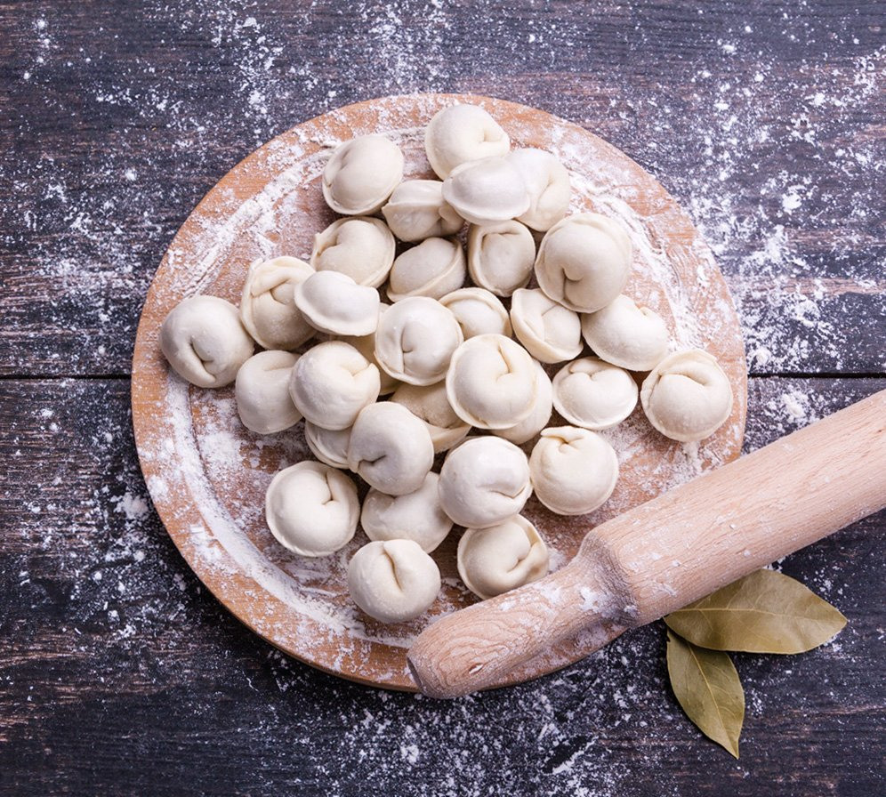
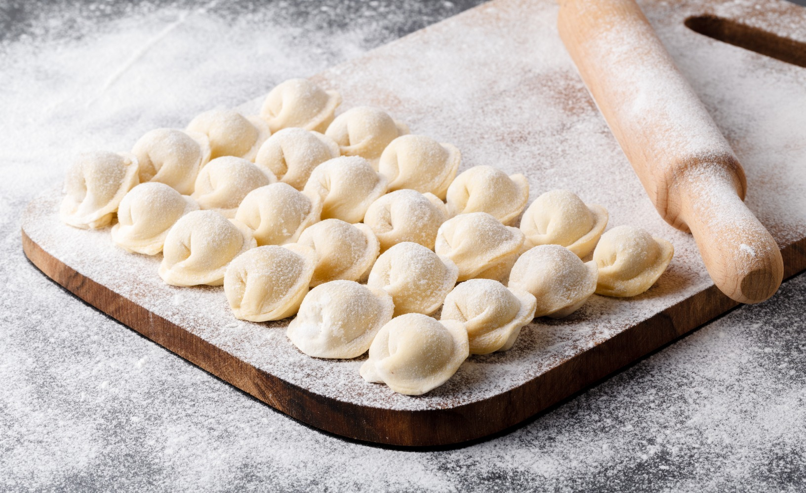

Пельмени
С мясом
Как готовить пельмени с мясом
Шаг 1: Приготовить тесто для классических пельменей. Муку просеять, собрать горкой. Сделать сверху углубление, влить в него яйцо и 1 ст. л. воды, добавить щепотку соли.
Шаг 2: Собрать муку с краев к середине, чтобы вода и яйцо не выливались из углубления. Вымесить тесто, добавляя небольшими порциями оставшуюся воду. * Вода для пельменного теста должна быть ледяной. Для этого ее заранее ставят в холодильник. Месить тесто для пельменей, пока оно не станет эластичным и однородным. Накрыть влажным полотенцем и оставить на 30 мин. В это время приготовить начинку. Лук и чеснок очистить, мелко порубить. Смешать говяжий и свиной фарш, добавить лук с чесноком, посолить, поперчить. Тщательно перемешать до однородности.
Макароны с котлетами — это просто другое агрегатное состояние пельменей..
Шаг 3: Готовое тесто для пельменей разделить на 4 части, три из них накрыть влажным полотенцем и отложить. Оставшееся тесто скатать в жгут толщиной 2 см. Нарезать его на кусочки шириной 1,5 см.
Шаг 4: На присыпанной мукой поверхности раскатать каждый кусочек теста для пельменей в тонкую лепешку. 
Шаг 5: Выложить в центр каждой лепешки по 1,5 ч. л. начинки, сложить кружок с начинкой пополам так, чтобы получился "полумесяц".
Шаг 6: Соединить концы "полумесяца" и скрепить их. Прижать пальцами, чтобы концы склеились. Выложить пельмени на поднос, присыпать мукой и поставить в холодильник. Так же приготовить пельмени из оставшегося теста. Пельмени следует сразу же отварить или заморозить. Для замораживания их раскладывают в один слой на присыпанный мукой поднос и убирают в морозильную камеру. Когда замерзнут, их можно переложить в пакеты. Отваривают пельмени, кладя их небольшими порциями в кипящую, чуть подсоленную воду. Как только пельмени всплывут, достать их шумовкой, немного подержать над паром и подавать к столу со сметаной, маслом или уксусом.